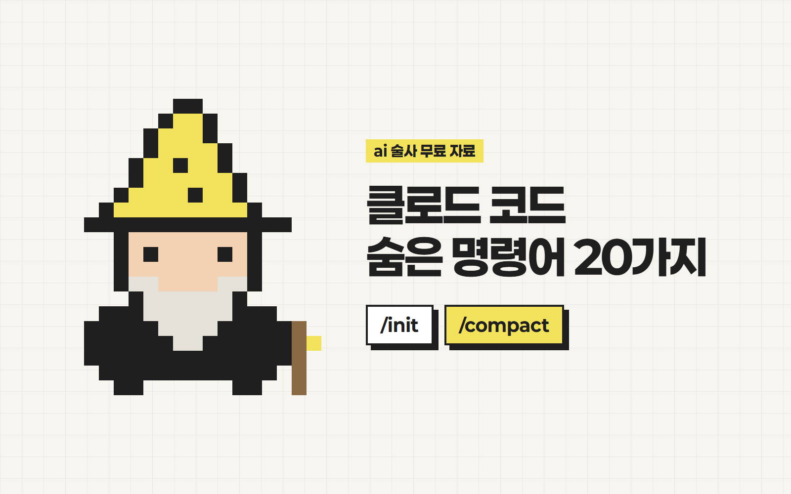
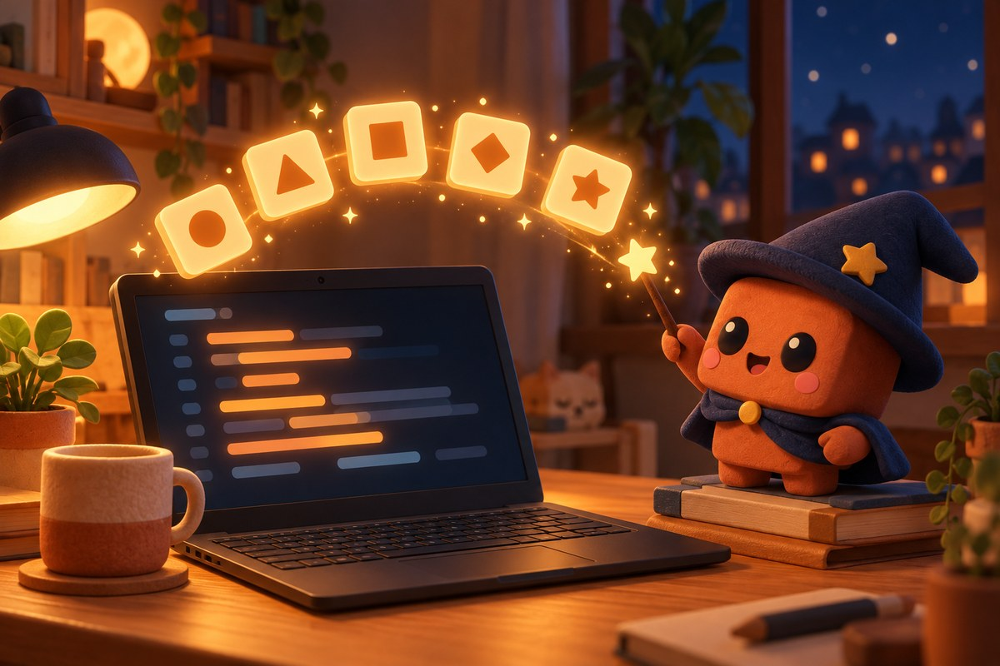

안녕하세요 ai 술사 성준입니다.
클로드 코드
숨은 명령어 20가지
클로드 코드 효율적으로 쓰는 5가지 명령어예요!
이거 쓰시면 토큰도 절약하고
작업 쉽게 할 수 있습니다
외우려고 하지 마시고,
쓸만한 거 몇 개만 뽑아서 써보세요!
익숙해지면 자주 쓰시게 될 거예요

준비물
- 1클로드 코드 (터미널·데스크톱 앱 어디서든)
- 2입력창에 / 만 쳐보기 — 쓸 수 있는 명령어 목록이 떠요
/init
내 프로젝트 규칙을 기억시켜요.
- 1프로젝트 폴더에서 클로드 코드를 켜요.
- 2입력창에 그대로 쳐요.
/init
폴더를 읽고 CLAUDE.md(규칙 파일)를 만들어요. 다음부터 같은 설명 안 해도 돼요.
/compact
긴 대화를 요약해서 토큰을 아껴요.
- 1대화가 길어졌다 싶을 때 쳐요.
- 2뒤에 남길 내용을 적으면 그 위주로 요약해요.
/compact 지금까지 정한 디자인 규칙 위주로 요약해줘
앞 대화가 짧은 요약으로 바뀌고, 이어서 바로 작업해요.
Esc 두 번
잘못 고쳤을 때 이전으로 되돌려요.
- 1Esc 키를 빠르게 두 번 눌러요.
- 2되돌아갈 메시지를 골라요.
Esc 한 번은 '멈춰', 두 번은 '되돌려'예요.
고르기 전 상태로 대화(설정에 따라 코드까지)가 돌아가요.
Shift + Tab
바로 실행하지 말고 계획부터 보여줘요.
- 1Shift + Tab을 눌러 아래에 'plan mode on'이 뜨게 해요. (누를 때마다 모드가 바뀌어요)
- 2평소처럼 할 일을 시켜요.
클로드가 파일을 건드리기 전에 계획부터 보여주고 허락을 받아요.
/resume
창 닫아서 날아간 대화를 다시 불러와요.
- 1클로드 코드를 다시 켜고 쳐요.
- 2목록에서 이어갈 대화를 골라요.
/resume
그 대화가 그대로 열려서 이어서 작업해요.
+ 15가지 더 (총 20가지)
버전마다 조금씩 달라요. 입력창에 /만 쳐서 목록에 있는지 확인하고 쓰세요!
대화·기억
/clear대화를 싹 비우고 새로 시작해요. 주제가 바뀔 때 쓰면 토큰을 아껴요./context지금 대화가 얼마나 찼는지 보여줘요./memory클로드가 기억하는 규칙 파일(CLAUDE.md)을 바로 열어서 고쳐요./export지금 대화를 파일로 내보내요.claude -c켜자마자 마지막 대화를 바로 이어가요. /resume보다 빨라요.입력 꿀팁
@파일이름파일을 콕 집어서 그것만 보라고 해요.! 로 시작클로드한테 시키지 않고 터미널 명령을 바로 실행해요.Esc 한 번하던 작업을 바로 멈춰요.설정·관리
/model모델을 바꿔요. 어려운 일은 Opus, 가벼운 일은 Sonnet./permissions"실행해도 될까요?" 묻는 걸 줄여요./add-dir다른 폴더도 같이 보게 해요./doctor설치가 꼬였을 때 뭐가 문제인지 진단해요./help쓸 수 있는 명령어 전체 목록을 보여줘요.고급
/agents일을 나눠 맡길 전용 비서(서브에이전트)를 만들어요./mcp노션·구글 같은 외부 서비스 연결을 관리해요.이렇게 써먹어요
- 새 프로젝트 시작하면 /init 먼저
- 대화가 길어지면 /compact
- 큰 수정은 Shift+Tab으로 계획부터 확인
궁금하신 점은 DM으로 편하게 물어봐 주세요 🪄
From. ai 술사 | 성준
ai술사의 모든 꿀팁 확인하기!